Faltava visibilidade da própria operação
O vendedor precisava entender o que estava em andamento, quais contas exigiam atenção e como sua carteira evoluía — sem encontrar essa leitura pronta em Smartspace ou Citrus.
Uma visão única para acompanhar sua operação comercial
Um portal B2B criado para resolver uma lacuna que nem Smartspace nem Citrus atendiam: permitir que vendedores acompanhassem, com clareza, sua carteira, suas oportunidades e a evolução das vendas em um único ambiente.
O produto não cria novos dados. Ele permite ao usuário uma forma de enxergar sua operação.
Produto
PORTAL DO PARCEIRO
Contexto
VENDEDORES SMARTPACE E CITRUS
Escopo
6 módulos para MVP
Implementação
Q4
Os vendedores não conseguiam acompanhar adequadamente seu desempenho, suas oportunidades e a evolução das vendas em nenhum dos sistemas existentes. Smartspace e Citrus sustentavam partes da operação, mas nenhum deles entregava uma visão comercial consolidada para o parceiro
O vendedor precisava entender o que estava em andamento, quais contas exigiam atenção e como sua carteira evoluía — sem encontrar essa leitura pronta em Smartspace ou Citrus.
Antes de desenhar, validei como os dois sistemas já tratavam dados e funcionalidades. Isso permitiu apoiar a nova experiência em estruturas reais, reduzir incertezas e antecipar problemas de implementação.
O Portal do Parceiro nasceu para preencher uma lacuna que Smartspace e Citrus não resolviam: transformar dados e capacidades já existentes em uma visão comercial realmente acompanhável.
Sem uma visão única de carteira e vendas, o acompanhamento dependia de navegar entre sistemas e informações fragmentadas que os próprios parceiros tentavam documentar de forma agrupada.
Carteira, oportunidades, contas, materiais e indicadores passam a compor uma única leitura operacional para o vendedor.
A demanda veio do time Comercial, e o trabalho começou antes da interface: estruturação do problema, arquitetura, fluxos e cenários do MVP.
Entendimento da demanda e definição do problema real.
Estrutura dos módulos e navegação do portal.
Happy paths, exceções e estados do MVP.
Validação de aderência com usuários reais.
Criação de um novo sistema visual capaz de dialogar com Smartspace e Citrus, preservando coerência sem copiar integralmente nenhum dos dois.
O MVP foi estruturado em módulos conectados por uma navegação persistente e fluxos definidos antes da alta fidelidade. Explorei cenários, analisei contextos e levantei os que tínhamos ou não de dados
Acesso e recuperação de senha.
Visão consolidada da operação.
Pipeline, etapas e detalhes.
Carteira e histórico.
Catálogo, busca e download.
Dados, permissões e segurança.
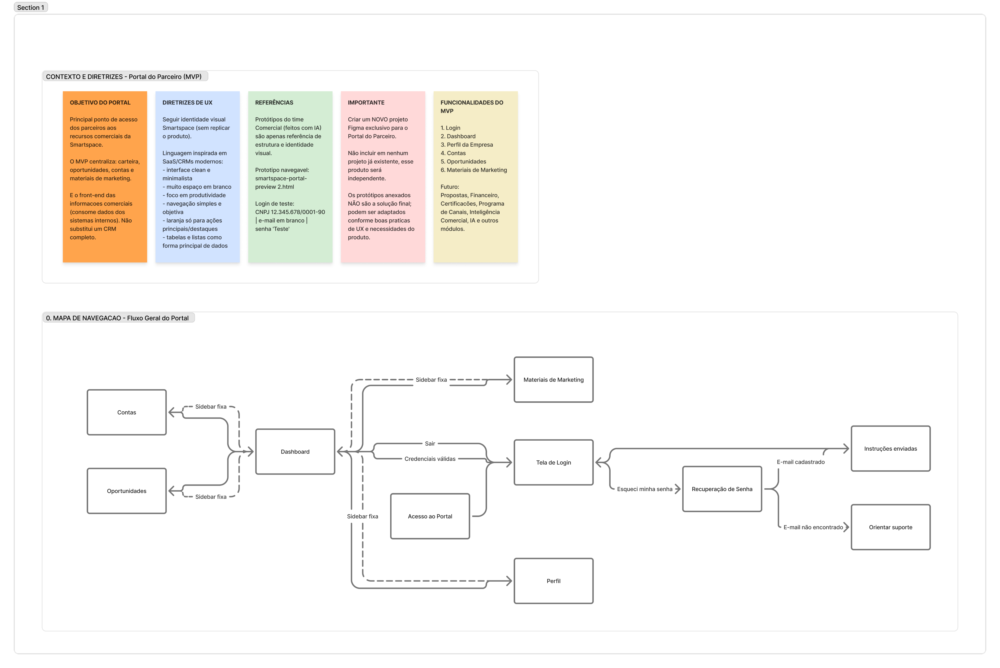
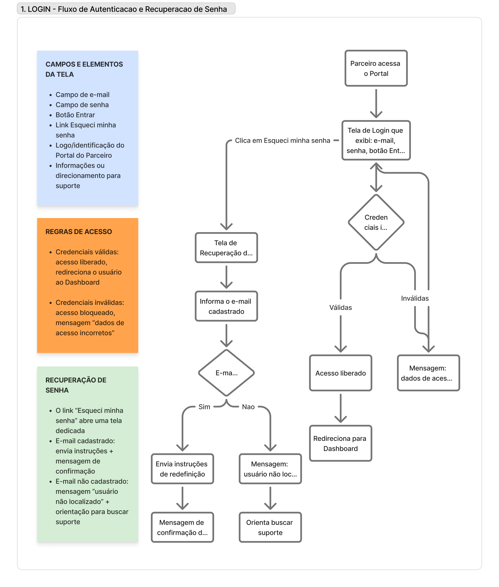
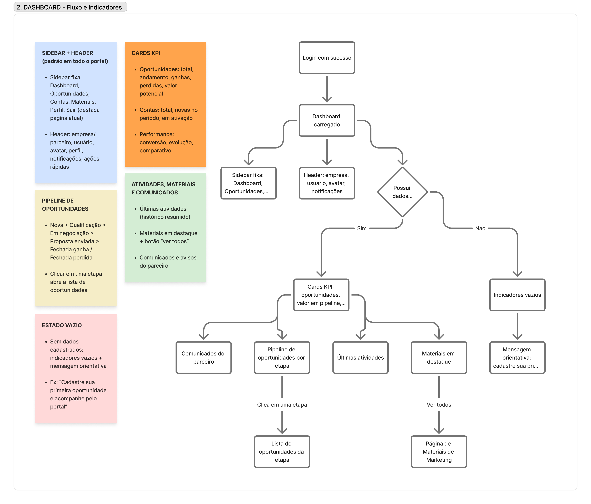
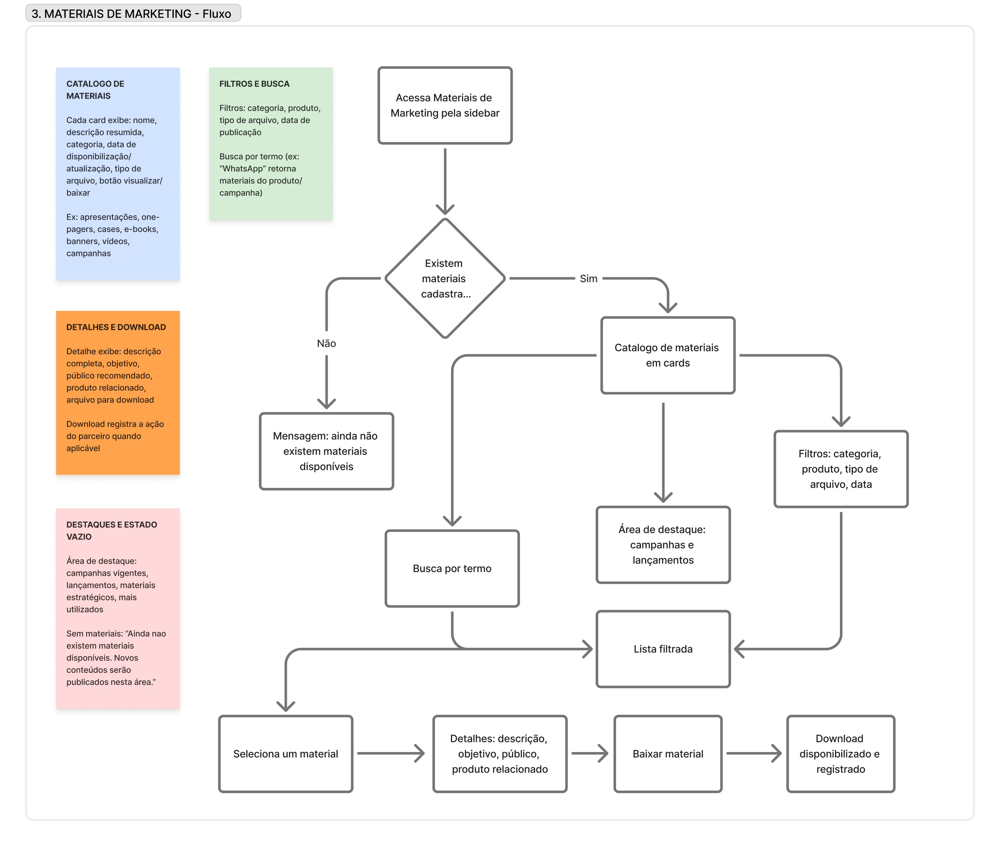
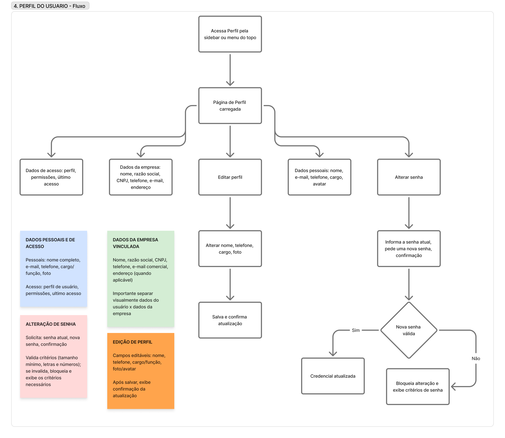
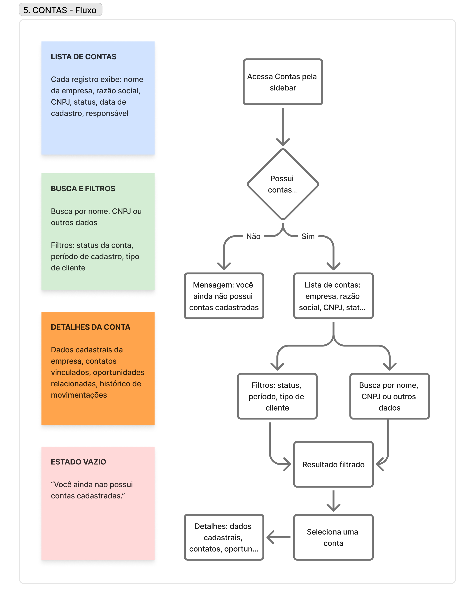
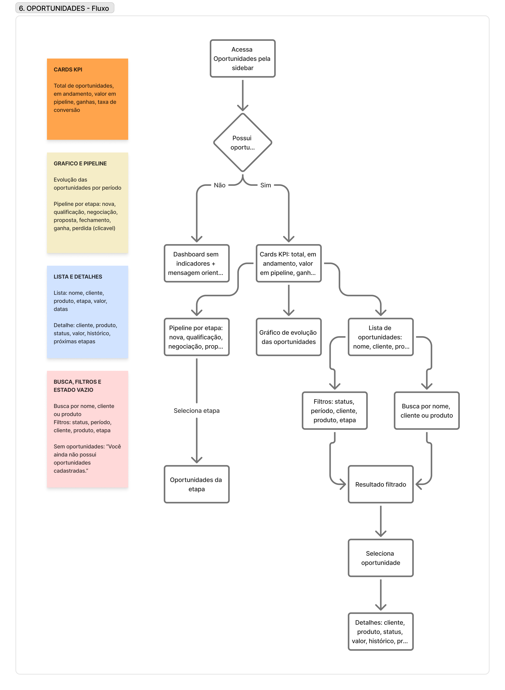
O dashboard não nasceu para “mostrar tudo”. Ele foi pensado para concentrar os principais sinais da operação comercial e permitir que o parceiro entenda rapidamente o que exige atenção.
O dashboard não nasceu para “mostrar KPIs”. Ele é o ponto onde informações antes fragmentadas passam a fazer sentido juntas: oportunidades, valor em pipeline, contas, materiais, atividades e comunicados.
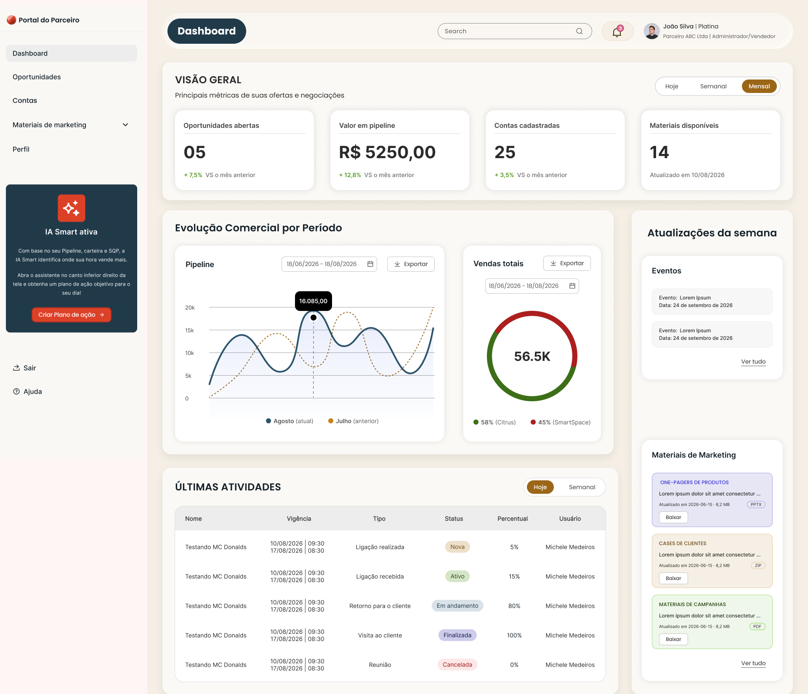
O fluxo de oportunidades permite partir do pipeline, entrar em uma etapa, consultar a lista correspondente e aprofundar em uma oportunidade específica sem perder o contexto da carteira.
Visão geral por etapa.
Recorte do funil selecionado.
Oportunidades relacionadas.
Informações e histórico da oportunidade.
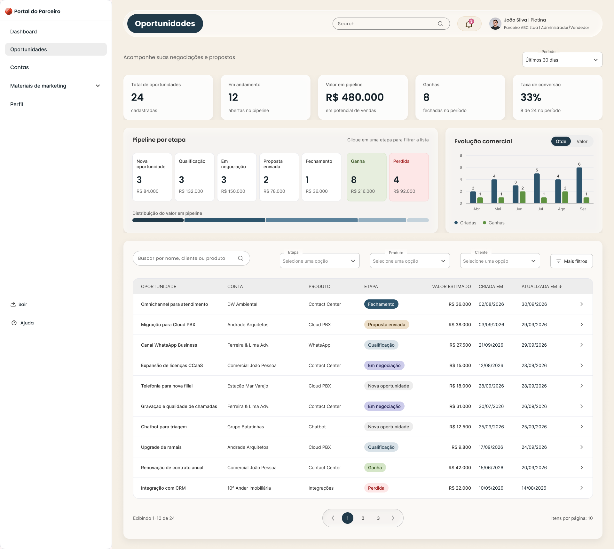
A área de Materiais de Marketing foi organizada para ajudar o parceiro a localizar o conteúdo certo por contexto, produto e necessidade, em vez de funcionar apenas como um repositório de arquivos.
Buscar oportunidades compatíveis com o perfil do usuário.
Ver detalhes, requisitos e compatibilidades antes de agir.
Enviar valores e condições dentro do contexto da oportunidade.
Consultar status, editar rascunhos e voltar para a oportunidade relacionada.
As perguntas frequentes mostram que o produto não precisava explicar apenas a interface, mas o próprio funcionamento do processo: alertas, tipos de serviços, propostas, comparação de preços, pagamentos e exigências cadastrais.
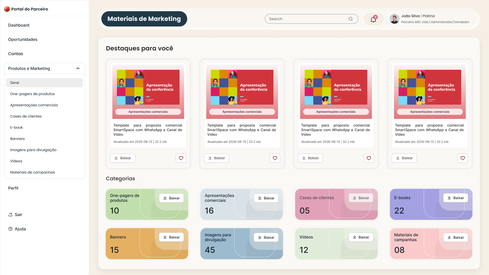
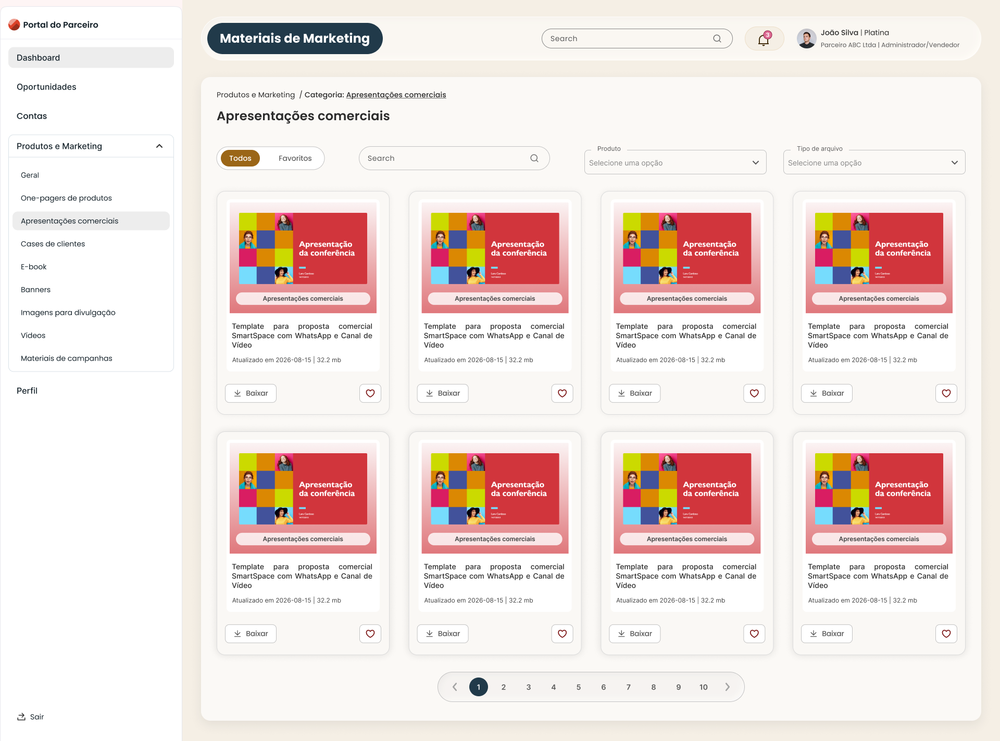
O módulo de Contas conecta a visão consolidada da carteira ao contexto de cada empresa, reunindo dados cadastrais, contatos, histórico de movimentações e oportunidades relacionadas.
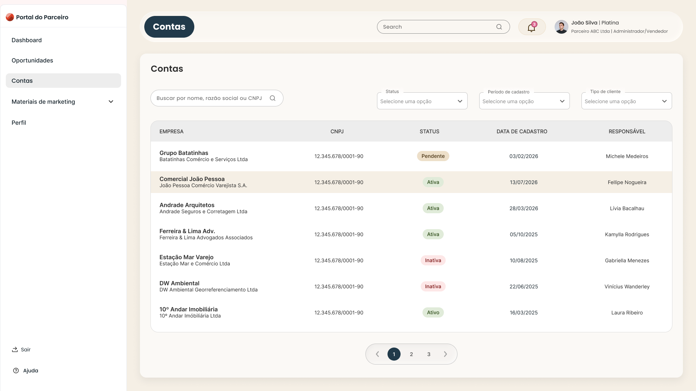
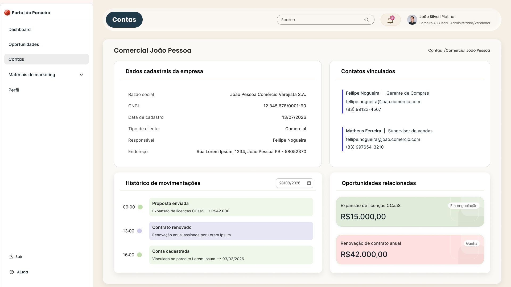
Os fluxos foram pensados com estados alternativos e exceções, não apenas com o cenário ideal.
Orientação para cadastrar a primeira oportunidade.
Mensagem clara sem interromper o fluxo de recuperação.
Direcionamento para suporte em vez de bloqueio silencioso.
Estado vazio explícito para reduzir incerteza.
Cada interface foi desenhada a partir das capacidades e dados que o sistema de fato poderia entregar. A intenção não era produzir uma visão idealizada para apresentação, mas um produto confiável e implementável.
A estrutura das telas acompanha informações existentes na base e funcionalidades reais do Citrus.
Os fluxos já nasciam considerando limitações e possibilidades do produto, reduzindo decisões que precisariam ser descartadas depois.
O Portal do Parceiro resolveu uma lacuna operacional concreta: os vendedores passaram a ter uma visão clara de sua carteira, oportunidades e evolução comercial, algo que nem Smartspace nem Citrus entregavam até então. A urgência da entrega exigia velocidade, mas não permitia decisões desconectadas da realidade técnica dos sistemas existentes.
Ao validar primeiro como Smartspace e Citrus já tratavam dados, regras e funcionalidades, foi possível construir uma experiência útil para o vendedor sem inventar estruturas paralelas, e acelerar a implementação com menos incerteza e menos retrabalho.
Carteira, oportunidades, contas e materiais passaram a compor uma visão operacional que os vendedores não tinham em nenhum dos sistemas anteriores.
Mapear como os sistemas já estruturavam informações permitiu projetar sobre uma base real e antecipar riscos de implementação.
A análise prévia reduziu decisões incompatíveis, retrabalho e problemas que poderiam aparecer apenas durante o desenvolvimento.
Como Smartspace não possuía um DS e o sistema criado para Citrus tinha outra linguagem, foi necessário desenhar um novo sistema que conversasse visualmente com ambos.